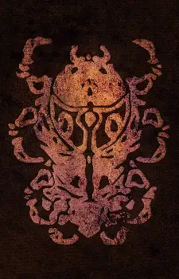

Ald'ruhn Chamber of Commerce
Home
Join
Discover
Directory
Information about Ald'ruhn
Council Seat of House Redoran
Map of Ald'ruhn
Important Locations of Ald'ruhn
Fighter's Guild
Filler text
Mage's Guild
Filler text
Silt Strider
Filler text
Tribunal Temple
Filler text
Fort Buckmoth
Filler text
Redoran Council Hall
Filler text